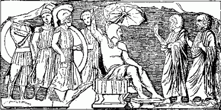

The Hellenes were now in Armenia. In this country there were no dangerous mountains, such as those they had just left, but here they had to contend against difficulties of another kind. The greater part of the country was 5,000 feet above the sea level, and in consequence of this, the winters were very long and cold, and the summers very short. In June the corn began to sprout. In September the harvest was gathered, and then the winter set in. It was now December, and the Hellenes were soon to experience the intense cold of an Armenian winter.
After crossing the Kentrites, they marched for a distance of a hundred and twenty miles over level country, without encountering any enemy. These marches occupied six days, and it mostly chanced that in the evening they found themselves near villages where they could shelter for the night.
On the seventh day there came to meet them a troop of horsemen, commanded by the satrap Tiribazus, who stood high in the favour of the Great King, and enjoyed the privilege, when he was at court, of helping the sovereign to mount on horseback.
He rode forward towards the Hellene army, and demanded speech of the generals, announcing that he was desirous of entering into a treaty with them. They were to promise that they would neither burn the villages nor do violence to the inhabitants, but they were at liberty to take any provisions that they might require; and he, for his part, would undertake not to molest them in any way.
This was all that could be desired, and the generals agreed to conclude the treaty on the terms proposed. But their previous experience of the Persians had not been such as to induce them to place much confidence in any promises they might make, and they judged that it was best, notwithstanding the treaty, to remain on their guard. Tiribazus followed their march at the distance of rather more than a mile.

A SATRAP RECEIVING DEPUTIES.
During the night that followed, the Hellenes were encamped beneath the open sky, when they were overtaken by the first fall of snow. The next day there was nothing to be seen of Tiribazus, and thinking that the deep snow would prevent him from attempting any surprise, they ventured, when night came on, to take up their quarters in some villages which they had reached.
In the morning however, some of the soldiers who had strayed to a distance the previous night, reported that they had seen a great number of fires in the neighbourhood, which seemed to show that the army of Tiribazus was not far off. The generals decided therefore that it was too unsafe to break up the army by allowing the soldiers to scatter themselves over various villages, and on the next night again camped out in the open, where all could be together.
But again the snow came down, and this time more heavily than before, burying as if in a grave, both the men and their stacks of weapons. The frost too was very severe, and the transport horses were so benumbed that they could hardly raise their limbs from the ground. The soldiers remained lying beneath the snow, for they found it warmer to be thus covered up, as if with a soft blanket, but Xenophon roused himself, and taking an axe, began to cut wood, partly for the sake of getting warm, partly in order to make a fire. Then some of the men followed his example, and soon they had a number of fires blazing.
After a night of such severity, the generals were afraid to risk spending another in the open air, and decided that at all hazards they must take shelter the next evening in the villages. They determined however to send out a small band of men, under cover of the darkness, to search in the direction in which the soldiers had stated that they had seen the fires burning.
No fires could be discovered, but the soldiers came upon a man carrying a battle-axe, and a Persian bow and quiver. When they asked him who he was, and where he came from, the man replied that he was a Persian, and had come from the army of Tiribazus to seek for food. Then they questioned him further as to the size of the army, and the purpose for which it had been assembled, and ascertained from his answers that the satrap was keeping a little in advance of the Hellenes in order to seize a pass in the mountains that they were now approaching, before they should reach it.
There could be no doubt that the Barbarians were intending to play the same treacherous game as before. It was well for the Hellenes that they had not trusted them. The soldiers returned, taking with them the Persian they had captured, and brought him into the presence of the generals, who again questioned him. Having satisfied themselves that he was speaking the truth, they resolved to be beforehand with Tiribazus, and detailed a part of the army to set out at once under the guidance of the prisoner towards the place where the Barbarians had pitched their camp, not far from the pass.
As they were going over one of the mountains, the archers and clingers who marched in front, caught sight of the camp, and without waiting for the hoplites, rushed forward with a loud cry, which so frightened the Barbarians that they immediately fled in the most disgraceful manner,—just as when the lion opens his mouth and roars, all the lesser animals run away in fear and trembling.
Few of the Barbarians were killed, but the Hellenes captured twenty horses, and the magnificent tent of the satrap, in which were found richly wrought drinking vessels, and couches with silver feet. The bakers and cup-bearers of the satrap were also taken prisoners.
After this, the Hellenes returned with all speed to their comrades, and the whole army hastened forward to secure the pass before the enemy should have time to recover from their alarm. This they accomplished successfully on the following day.
Three more marches brought them to the Euphrates, but as the river was in this part of the country near its source they were able to ford it without difficulty, for the water did not reach higher than the middle of their bodies.